CODING AGENTS AS PIXEL WORLD MODELS
traex/DeepSeek-V4.1-Flash · 0167
点击播放 · 原生 RGB 像素
逐轮保存的候选
回放视频、检查图与代码变化。
每份候选均可单独播放。实际图片检查记录在下方工具轨迹中。
候选 01播放与检查图
点击播放 · 原生 RGB 像素
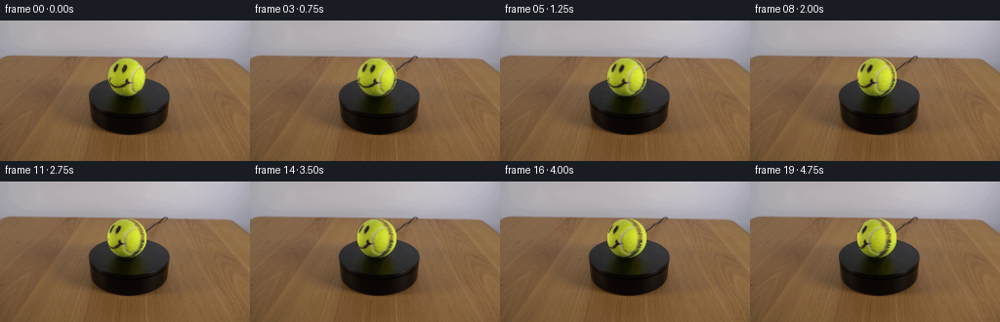
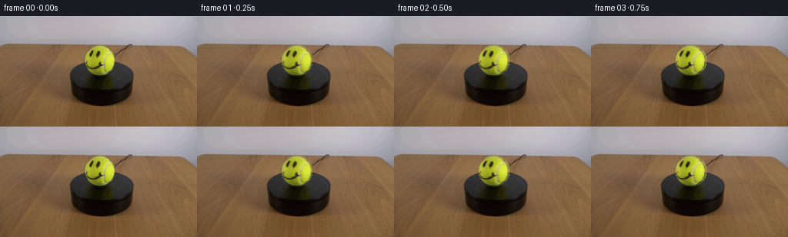
展开代码变化
--- 上一保存版本
+++ 本次保存版本
@@ -0,0 +1,121 @@
+from pathlib import Path
+
+import cv2
+import numpy as np
+from PIL import Image
+
+import artifact_io
+
+
+CASE_DIR = Path(__file__).resolve().parent
+N_FRAMES = 20
+FPS = 4
+WIDTH = 256
+HEIGHT = 144
+
+
+def smoothstep(edge0, edge1, x):
+ t = np.clip((x - edge0) / (edge1 - edge0), 0.0, 1.0)
+ return t * t * (3.0 - 2.0 * t)
+
+
+def bilinear_sample(image, x, y):
+ h, w = image.shape[:2]
+ x = np.clip(x, 0.0, w - 1.001)
+ y = np.clip(y, 0.0, h - 1.001)
+ x0 = np.floor(x).astype(np.int32)
+ y0 = np.floor(y).astype(np.int32)
+ x1 = x0 + 1
+ y1 = y0 + 1
+ wx = (x - x0)[..., None]
+ wy = (y - y0)[..., None]
+ top = image[y0, x0] * (1.0 - wx) + image[y0, x1] * wx
+ bottom = image[y1, x0] * (1.0 - wx) + image[y1, x1] * wx
+ return top * (1.0 - wy) + bottom * wy
+
+
+def fit_ball_shading(rgb, u, v, radius_mask):
+ hsv = cv2.cvtColor(np.clip(rgb, 0, 255).astype(np.uint8), cv2.COLOR_RGB2HSV)
+ green = (
+ radius_mask
+ & (hsv[:, :, 0] >= 18)
+ & (hsv[:, :, 0] <= 55)
+ & (hsv[:, :, 1] > 80)
+ & (hsv[:, :, 2] > 55)
+ )
+
+ terms = [(i, j) for i in range(4) for j in range(4 - i)]
+ design = np.stack([u[green] ** i * v[green] ** j for i, j in terms], axis=1)
+ values = rgb[green].astype(np.float64)
+ keep = np.ones(len(values), dtype=bool)
+
+ for _ in range(10):
+ coefficients = np.linalg.lstsq(design[keep], values[keep], rcond=None)[0]
+ residual = np.linalg.norm(values - design @ coefficients, axis=1)
+ median = np.median(residual[keep])
+ mad = np.median(np.abs(residual[keep] - median))
+ threshold = max(6.0, median + 2.8 * 1.4826 * mad)
+ keep = residual < threshold
+
+ full_design = np.stack([u**i * v**j for i, j in terms], axis=-1)
+ return full_design @ coefficients
+
+
+def build_frames(first_frame):
+ rgb = first_frame.astype(np.float64)
+ yy, xx = np.mgrid[:HEIGHT, :WIDTH]
+
+ center_x, center_y = 129.5, 57.5
+ radius_x, radius_y = 20.2, 20.2
+ u = (xx - center_x) / radius_x
+ v = (center_y - yy) / radius_y
+ q = u * u + v * v
+ w = np.sqrt(np.clip(1.0 - q, 0.0, 1.0))
+
+ ball_mask = q < 0.96
+ base = fit_ball_shading(rgb, u, v, ball_mask)
+ detail = rgb - base
+
+ # Suppress sub-pixel source-edge contamination before rotating the surface detail.
+ detail_weight = smoothstep(0.02, 0.18, w)
+ detail *= detail_weight[..., None]
+
+ frames = np.empty((N_FRAMES, HEIGHT, WIDTH, 3), dtype=np.uint8)
+ frames[0] = first_frame
+
+ radius = np.sqrt(q)
+ edge_alpha = 1.0 - smoothstep(0.985, 1.025, radius)
+ edge_alpha = edge_alpha[..., None]
+
+ for frame_index in range(1, N_FRAMES):
+ # Clockwise yaw as viewed from above. The front face travels left across frame.
+ phi = np.deg2rad(2.0 * frame_index)
+ cos_phi = np.cos(phi)
+ sin_phi = np.sin(phi)
+
+ source_x = cos_phi * u + sin_phi * w
+ source_y = v
+ source_z = -sin_phi * u + cos_phi * w
+
+ sample_x = center_x + radius_x * source_x
+ sample_y = center_y - radius_y * source_y
+ rotated_detail = bilinear_sample(detail, sample_x, sample_y)
+ visible = smoothstep(0.0, 0.14, source_z)[..., None]
+ rotated_detail *= visible
+
+ rendered = np.clip(base + rotated_detail, 0.0, 255.0)
+ frame = rgb * (1.0 - edge_alpha) + rendered * edge_alpha
+ frames[frame_index] = np.clip(np.rint(frame), 0, 255).astype(np.uint8)
+
+ return frames
+
+
+def main():
+ first_frame = np.asarray(Image.open(CASE_DIR / "first_frame.png").convert("RGB"))
+ assert first_frame.shape == (HEIGHT, WIDTH, 3)
+ frames = build_frames(first_frame)
+ artifact_io.save(frames, CASE_DIR)
+
+
+if __name__ == "__main__":
+ main()
候选 02播放与检查图
点击播放 · 原生 RGB 像素

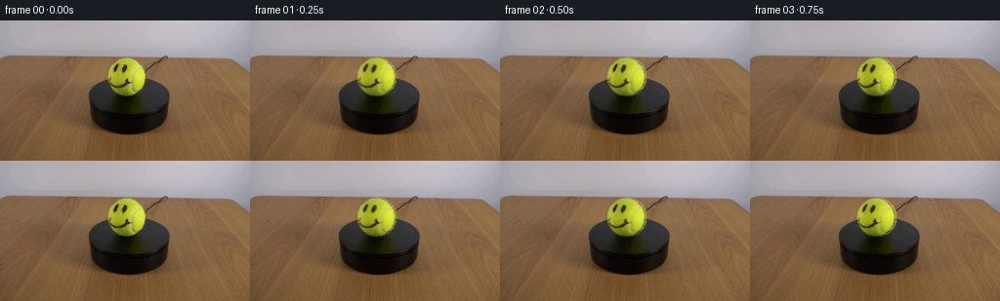
展开代码变化
--- 上一保存版本
+++ 本次保存版本
@@ -76,6 +76,32 @@
base = fit_ball_shading(rgb, u, v, ball_mask)
detail = rgb - base
+ # The original image only gives one view of the printed surface. Use the
+ # residual directly, but separate the low-contrast white seam from the ink
+ # so it does not broaden into a highlight as it rotates through the front.
+ base_luma = np.einsum("...c,c->...", base, np.array([0.299, 0.587, 0.114]))
+ rgb_luma = np.einsum("...c,c->...", rgb, np.array([0.299, 0.587, 0.114]))
+ chroma_lift = detail[:, :, 2]
+ ink_mask = (
+ ball_mask
+ & (rgb_luma < base_luma - 28.0)
+ & (chroma_lift < 10.0)
+ )
+ white_mask = (
+ ball_mask
+ & ~ink_mask
+ & (chroma_lift > 8.0)
+ & (rgb_luma > base_luma - 44.0)
+ )
+ felt_weight = 1.0 - smoothstep(0.12, 0.28, np.maximum(
+ smoothstep(-18.0, 18.0, chroma_lift),
+ smoothstep(18.0, 32.0, np.abs(rgb_luma - base_luma)),
+ ))
+
+ detail *= (0.82 + 0.18 * felt_weight)[..., None]
+ detail[ink_mask] *= 1.16
+ detail[white_mask] *= 0.55
+
# Suppress sub-pixel source-edge contamination before rotating the surface detail.
detail_weight = smoothstep(0.02, 0.18, w)
detail *= detail_weight[..., None]
可观测工具轨迹
实际执行的命令与返回图片。
命令 1exit 0
/bin/bash -c "pwd && rg --files -g 'prompt.txt' -g 'GENERATION_RULES.md' -g 'first_frame.png' -g '"'!*.mp4'"'"
命令 2exit 0
/bin/bash -c 'git status --short'
命令 3exit 0
/bin/bash -c 'cat prompt.txt'
命令 4exit 0
/bin/bash -c 'cat GENERATION_RULES.md'
命令 5exit 0
/bin/bash -c 'file first_frame.png && identify first_frame.png 2>/dev/null || true'
命令 6exit 0
/bin/bash -c "find . -maxdepth 2 -type f -printf '%P\\n' | sort"
命令 7exit 0
/bin/bash -c "sed -n '1,240p' artifact_io.py"
命令 8exit 0
/bin/bash -c "sed -n '1,260p' player_template.html"
命令 9exit 0
/bin/bash -c "python - <<'PY'
from PIL import Image
im=Image.open('first_frame.png')
print(im.mode, im.size)
PY"命令 10exit 0
/bin/bash -c "python - <<'PY' import importlib.util for m in ['numpy','PIL','cv2','scipy','skimage','imageio']: print(m, bool(importlib.util.find_spec(m))) PY"
命令 11exit 0
/bin/bash -c "python - <<'PY'
from PIL import Image
im=Image.open('first_frame.png')
im.crop((88,36,172,105)).resize((672,552)).save('.tmp/ball_crop.png')
PY"命令 12exit 0
/bin/bash -c "python - <<'PY'
import cv2, numpy as np
im=cv2.imread('first_frame.png')
hsv=cv2.cvtColor(im, cv2.COLOR_BGR2HSV)
# print stats/quantiles in ROI
for y,x in [(66,129),(60,120),(75,140),(50,130),(82,130),(66,108),(66,150)]: print((x,y), im[y,x][::-1], hsv[y,x])
# threshold high sat yellowgreen
mask=((hsv[:,:,0]>=20)&(hsv[:,:,0]<=100)&(hsv[:,:,1]>=70)&(hsv[:,:,2]>=50)).astype(np.uint8)*255
mask[:30]=0; mask[100:]=0; mask[:,:80]=0; mask[:,180:]=0
n,lab,stats,cents=cv2.connectedComponentsWithStats(mask)
print(stats)
cv2.imwrite('.tmp/ball_mask.png',mask)
PY"命令 13exit 0
/bin/bash -c "python - <<'PY'
import cv2,numpy as np
im=cv2.imread('first_frame.png'); hsv=cv2.cvtColor(im,cv2.COLOR_BGR2HSV)
# green/yellow saturation includes ball; print extents row each y between 30-100
for y in range(35,90):
xs=np.where((hsv[y,:,0]>18)&(hsv[y,:,0]<100)&(hsv[y,:,1]>70)&(hsv[y,:,2]>40))[0]
xs=xs[(xs>90)&(xs<175)]
if len(xs): print(y,xs.min(),xs.max(),len(xs))
PY"命令 14exit 0
/bin/bash -c "python - <<'PY'
import cv2,numpy as np
im=cv2.imread('first_frame.png'); hsv=cv2.cvtColor(im,cv2.COLOR_BGR2HSV)
# whole ball silhouette likely based on color diff table, inspect background columns
for y in [37,38,40,50,60,70,76,77]:
print('\\ny',y)
for x in range(100,160,2): print(x, tuple(im[y,x][::-1]), end='; ')
print()
PY"命令 15exit 0
/bin/bash -c "python - <<'PY'
import cv2,numpy as np
im=cv2.imread('first_frame.png')
hsv=cv2.cvtColor(im,cv2.COLOR_BGR2HSV)
cx,cy,rx,ry=129.5,58.5,20.5,21
Y,X=np.mgrid[:144,:256]
nx=(X-cx)/rx; ny=(cy-Y)/ry
r2=nx*nx+ny*ny
ball=r2<=1.03
v=hsv[:,:,2]; s=hsv[:,:,1]; h=hsv[:,:,0]
ink=ball&(v<95)&(s<135)
seam=ball&(v>105)&(s<90)
# ignore top bright due wall? only within ball
for name,m in [('ink',ink),('seam',seam),('ball',ball)]:
print(name,m.sum())
# visualize
out=np.zeros_like(im)
out[ink]=[255,255,255]
out[seam]=[0,0,255]
cv2.imwrite('.tmp/ink_seam.png',out)
# create nearest overlay
ov=im.copy(); ov[ink]=[255,0,255]; ov[seam]=[0,0,255]
cv2.imwrite('.tmp/overlay.png',cv2.resize(ov[25:90,95:165],None,fx=8,fy=8,interpolation=cv2.INTER_NEAREST))
PY"命令 16exit 0
/bin/bash -c "python - <<'PY'
from PIL import Image
im=Image.open('first_frame.png')
im.resize((1024,576), Image.Resampling.NEAREST).save('.tmp/full_nearest.png')
PY"命令 17exit 0
/bin/bash -c "python - <<'PY'
import cv2
im=cv2.imread('first_frame.png')
for x in [110,111,112,115,120,125,130,135,140,145,148,149]:
print('\\nx',x)
for y in range(34,83):
b,g,r=map(int,im[y,x]); h,s,v=cv2.cvtColor(im[y:y+1,x:x+1],cv2.COLOR_BGR2HSV)[0,0]
if y%1==0 and (y<42 or y>73): print(y,(r,g,b),(h,s,v))
PY"命令 18exit 0
/bin/bash -c "python - <<'PY' import numpy as np pts=np.array([[136,40],[145,50],[149,60],[141,75]],float) cx,cy,r=129.5,58.5,20.5 v=[] for x,y in pts: nx=(x-cx)/r; ny=(cy-y)/r; nz=np.sqrt(max(0,1-nx*nx-ny*ny)); v.append([nx,ny,nz]) v=np.array(v) print(v) u,s,vt=np.linalg.svd(v) print(vt[-1],s) PY"
命令 19exit 0
/bin/bash -c "python - <<'PY'
import cv2,numpy as np
im=cv2.imread('first_frame.png'); hsv=cv2.cvtColor(im,cv2.COLOR_BGR2HSV)
Y,X=np.mgrid[:144,:256]; cx,cy=129.5,58.5; rx,ry=20,21
r2=((X-cx)/rx)**2+((Y-cy)/ry)**2
for thr in [(100,130),(90,130),(105,130),(90,140),(110,120),(100,120)]:
vmax,smx=thr;m=(r2<.96)&(hsv[:,:,2]<vmax)&(hsv[:,:,1]<smx)
print(thr,m.sum())
# save masks via R
for i,(vmax,smx) in enumerate([(105,135),(100,140),(110,130),(95,150)]):
m=(r2<.98)&(hsv[:,:,2]<vmax)&(hsv[:,:,1]<smx)
cv2.imwrite(f'.tmp/m{i}.png',m.astype(np.uint8)*255)
PY"命令 20exit 0
/bin/bash -c "python - <<'PY'
import cv2,numpy as np
im=cv2.imread('first_frame.png'); hsv=cv2.cvtColor(im,cv2.COLOR_BGR2HSV)
Y,X=np.mgrid[:144,:256]; cx,cy=129.5,58.5; rx,ry=20,21
r2=((X-cx)/rx)**2+((Y-cy)/ry)**2
m=(r2<.98)&(hsv[:,:,2]<105)&(hsv[:,:,1]<135)
ov=im.copy(); ov[m]=[255,0,255]
cv2.imwrite('.tmp/maskov.png',cv2.resize(ov[25:90,95:165],None,fx=8,fy=8,interpolation=cv2.INTER_NEAREST))
PY"命令 21exit 0
/bin/bash -c "python - <<'PY'
import cv2,numpy as np
im=cv2.imread('first_frame.png'); hsv=cv2.cvtColor(im,cv2.COLOR_BGR2HSV)
Y,X=np.mgrid[:144,:256]; cx,cy=129.5,58.5; rx,ry=20,21
r2=((X-cx)/rx)**2+((Y-cy)/ry)**2
# LAB difference from estimated base green? ink darker than smoothed green
b,g,r=cv2.split(im); green=(g.astype(float)+r)/2
# print candidate pixels with dark color
m=(r2<1.0)&(green<85)
print('n',m.sum())
ov=im.copy(); ov[m]=[255,0,255]
cv2.imwrite('.tmp/maskov2.png',cv2.resize(ov[25:90,95:165],None,fx=8,fy=8,interpolation=cv2.INTER_NEAREST))
# save mask for inspection
cv2.imwrite('.tmp/inkraw.png',m.astype(np.uint8)*255)
PY"命令 22exit 0
/bin/bash -c "python - <<'PY'
import cv2,numpy as np
im=cv2.imread('first_frame.png'); hsv=cv2.cvtColor(im,cv2.COLOR_BGR2HSV)
Y,X=np.mgrid[:144,:256]; cx,cy=129.5,58.5; rx,ry=20,21
r2=((X-cx)/rx)**2+((Y-cy)/ry)**2
for cond in [((hsv[:,:,0]>15)&(hsv[:,:,0]<45)&(hsv[:,:,2]<100)&(hsv[:,:,1]<180)), ((hsv[:,:,0]>15)&(hsv[:,:,0]<45)&(hsv[:,:,2]<130)&(hsv[:,:,1]<160)), ((hsv[:,:,0]>15)&(hsv[:,:,0]<45)&(hsv[:,:,2]<140)&(hsv[:,:,1]<200))]:
m=(r2<1.01)&cond
print(m.sum())
ov=im.copy();ov[m]=[255,0,255]
cv2.imwrite('.tmp/maskov3.png',cv2.resize(ov[25:90,95:165],None,fx=8,fy=8,interpolation=cv2.INTER_NEAREST))
break
PY"命令 23exit 0
/bin/bash -c "python - <<'PY'
from PIL import Image
im=Image.open('first_frame.png')
im.crop((95,28,165,88)).resize((700,600), Image.Resampling.NEAREST).save('.tmp/ball_big.png')
PY"命令 24exit 0
/bin/bash -c "python - <<'PY'
import cv2,numpy as np
im=cv2.imread('first_frame.png'); hsv=cv2.cvtColor(im,cv2.COLOR_BGR2HSV)
Y,X=np.mgrid[:144,:256]; cx,cy=129.5,58.5; rx,ry=20,21
r2=((X-cx)/rx)**2+((Y-cy)/ry)**2
# local color: ink has low blue/green relative red but saturation lower? sample
# print key pixels full
for y in range(46,77):
for x in range(113,145):
b,g,r=map(int,im[y,x])
# candidate dark: max<100
if max(r,g,b)<90 and (X[y,x]-cx)**2/rx**2+(Y[y,x]-cy)**2/ry**2<.95:
print((x,y),(r,g,b),end=';')
print()
PY"命令 25exit 0
/bin/bash -c "python - <<'PY'
import numpy as np
pts=np.array([[136,40],[146,49],[149,59],[144,69],[140,75]],float)
cx,cy,r=129.5,58.5,20.5
v=[]
for x,y in pts:
nx=(x-cx)/r; ny=(cy-y)/r; nz=np.sqrt(max(0,1-nx*nx-ny*ny)); v.append([nx,ny,nz])
v=np.array(v)
u,s,vt=np.linalg.svd(v)
print(v);print('plane',vt[-1],s)
for p in v:print(p@vt[-1])
PY"命令 26exit 0
/bin/bash -c "python - <<'PY'
import numpy as np
pts=np.array([[136,40],[146,49],[149,59],[144,69],[140,75]],float)
cx,cy,r=129.5,58.5,20.5
v=[]
for x,y in pts:
nx=(x-cx)/r; ny=(cy-y)/r; nz=np.sqrt(max(0,1-nx*nx-ny*ny)); v.append([nx,ny,nz])
v=np.array(v)
# fit great circle plane centered maybe offset z? unit normals not exactly plane due radius
u,s,vt=np.linalg.svd(v-v.mean(0)); print('centered',vt[-1],s)
# seam likely vertical great circle with tangent at near right side; plane normal x/z
PY"命令 27exit 0
/bin/bash -c "python - <<'PY'
import cv2,numpy as np
from scipy.optimize import least_squares
im=cv2.imread('first_frame.png')[:,:,::-1].astype(float)
hsv=cv2.cvtColor(im.astype(np.uint8),cv2.COLOR_RGB2HSV)
Y,X=np.mgrid[:144,:256]; cx,cy,rx,ry=129.5,58.5,20.2,20.8
nx=(X-cx)/rx; ny=(cy-Y)/ry; r2=nx*nx+ny*ny
nz=np.sqrt(np.clip(1-r2,0,1))
L=0.299*im[:,:,0]+0.587*im[:,:,1]+0.114*im[:,:,2]
h=hsv[:,:,0]; s=hsv[:,:,1]; v=hsv[:,:,2]
m=(r2<0.72)&(h>18)&(h<55)&(s>80)&(v>55)&(v<235)
# exclude known face ink/seam via L/color deviation maybe use median smooth
pts=np.stack([np.ones(m.sum()),nx[m],ny[m],nz[m],nx[m]**2,ny[m]**2,nz[m]**2,nx[m]*ny[m],nx[m]*nz[m],ny[m]*nz[m]],1)
y=L[m]
coef=np.linalg.lstsq(pts,y,rcond=None)[0]
pred=pts@coef
res=y-pred
print('coef',coef,'L stats',np.percentile(y,[5,25,50,75,95]),'res',np.std(res))
# robust iterative
mask=np.ones(len(y),bool)
for i in range(5):
c=np.linalg.lstsq(pts[mask],y[mask],rcond=None)[0]; r=y-pts@c; mask=np.abs(r-np.median(r[mask]))<max(8,np.percentile(np.abs(r[mask]),75)*1.5)
print('robust',c,'n',mask.sum(),'std',np.std(r[mask]))
# grid pred
P=np.stack([np.ones_like(nx),nx,ny,nz,nx**2,ny**2,nz**2,nx*ny,nx*nz,ny*nz],-1)@c
print('pred range',np.percentile(P[r2<1],[0,1,5,50,95,99,100]))
# output shading map image
S=np.clip(P,1,255)
out=np.zeros((144,256,3),np.uint8); out[:]=np.clip(S[...,None]*np.array([0.85,1.0,0.25]),0,255).astype(np.uint8)
cv2.imwrite('.tmp/shading.png',cv2.resize(out[30:90,100:160],None,fx=8,fy=8,interpolation=cv2.INTER_NEAREST))
PY"命令 28exit 0
/bin/bash -c "python - <<'PY'
import cv2,numpy as np
im=cv2.imread('first_frame.png')[:,:,::-1].astype(float)
hsv=cv2.cvtColor(im.astype(np.uint8),cv2.COLOR_RGB2HSV)
Y,X=np.mgrid[:144,:256]; cx,cy,r=129.5,58.5,20.2
u=(X-cx)/r; v=(cy-Y)/r; q=u*u+v*v
# candidate green pixels
m=(q<0.94)&(hsv[:,:,0]>=18)&(hsv[:,:,0]<=55)&(hsv[:,:,1]>80)&(hsv[:,:,2]>55)
# fit degree 3 in u,v per channel robust
terms=[]
for i in range(4):
for j in range(4-i): terms.append((i,j))
A=np.stack([u[m]**i*v[m]**j for i,j in terms],1)
B=im[m]
keep=np.ones(m.sum(),bool)
for k in range(8):
coef=np.linalg.lstsq(A[keep],B[keep],rcond=None)[0]
pred=A@coef
res=np.linalg.norm(B-pred,axis=1)
med=np.median(res[keep]); mad=np.median(np.abs(res[keep]-med))
th=max(7,med+2.8*1.4826*mad)
keep=res<th
print('n',m.sum(),keep.sum(),'med',med,'th',th,'coef',coef)
# field
P=np.stack([u**i*v**j for i,j in terms],-1)@coef
# show green base (pred) crop
out=np.zeros_like(im)
out[:]=P
out=np.clip(out,0,255).astype(np.uint8)
cv2.imwrite('.tmp/shading_pred.png',cv2.resize(out[30:90,100:160,::-1],None,fx=8,fy=8,interpolation=cv2.INTER_NEAREST))
# overlay grid: print predicted sample values at key points
for x,y in [(129,40),(129,50),(129,58),(129,70),(115,58),(145,58),(120,50),(140,50)]:
print((x,y),im[y,x].astype(int),P[y,x].round(1))
PY"命令 29exit 0
/bin/bash -c "python - <<'PY'
import cv2,numpy as np
im=cv2.imread('first_frame.png')[:,:,::-1]
# create coordinate print by grid ascii quantized luminance every 2px around ball
Y,X=np.mgrid[:144,:256]; L=(.299*im[:,:,0]+.587*im[:,:,1]+.114*im[:,:,2]).astype(int)
chars=' .:-=+*#%@'
for y in range(34,84,2):
print(f'{y:02d} '+''.join(chars[min(9,L[y,x]//26)] for x in range(104,156,2)))
PY"命令 30exit 0
/bin/bash -c "python - <<'PY'
import cv2,numpy as np
im=cv2.imread('first_frame.png')
# upscaled with Lanczos for understanding only
cv2.imwrite('.tmp/ball_lanczos.png',cv2.resize(im[30:90,100:160],None,fx=10,fy=10,interpolation=cv2.INTER_CUBIC))
PY"命令 31exit 0
/bin/bash -c "python - <<'PY'
import cv2,numpy as np
im=cv2.imread('first_frame.png')[:,:,::-1].astype(float)
hsv=cv2.cvtColor(im.astype(np.uint8),cv2.COLOR_RGB2HSV)
Y,X=np.mgrid[:144,:256]; cx,cy,rx,ry=129.5,58.5,20.0,20.4
u=(X-cx)/rx; v=(cy-Y)/ry; q=u*u+v*v
inside=q<0.94
# fit polynomial on green-like pixels
m=inside&(hsv[:,:,0]>=18)&(hsv[:,:,0]<=55)&(hsv[:,:,1]>80)&(hsv[:,:,2]>55)
terms=[(i,j) for i in range(4) for j in range(4-i)]
A=np.stack([u[m]**i*v[m]**j for i,j in terms],1); B=im[m]
keep=np.ones(len(B),bool)
for k in range(10):
coef=np.linalg.lstsq(A[keep],B[keep],rcond=None)[0]; pred=A@coef
res=np.linalg.norm(B-pred,axis=1); med=np.median(res[keep]); mad=np.median(np.abs(res[keep]-med)); th=max(6,med+2.6*1.4826*mad); keep=res<th
print(med,mad,th,keep.sum(),len(B))
P=np.stack([u**i*v**j for i,j in terms],-1)@coef
# maps
L=.299*im[:,:,0]+.587*im[:,:,1]+.114*im[:,:,2]; PL=.299*P[:,:,0]+.587*P[:,:,1]+.114*P[:,:,2]
dL=L-PL; dB=im[:,:,2]-P[:,:,2]; dG=im[:,:,1]-P[:,:,1]; dR=im[:,:,0]-P[:,:,0]
print('dL quant',np.percentile(dL[inside],[0,1,5,10,25,50,75,90,95,99,100]))
print('dB quant',np.percentile(dB[inside],[0,1,5,10,25,50,75,90,95,99,100]))
# masks vary
for thr in [15,25,35,45]:
ink=inside&(dL < -thr)
print('ink',thr,ink.sum())
# seam using B relative and saturation
seam=inside&(dB>10)&(im[:,:,2]>70)&(hsv[:,:,1]<150)&(dL>-40)
print('seam',seam.sum())
ov=im.astype(np.uint8).copy(); ov[inside&(dL<-25)]=[255,0,255]; ov[seam]=[0,0,255]
cv2.imwrite('.tmp/resid_ov.png',cv2.resize(ov[30:90,100:160,::-1],None,fx=10,fy=10,interpolation=cv2.INTER_NEAREST))
# heatmap of dL and dB
def heat(a):
a=np.clip((a+80)*2,0,255).astype(np.uint8);return cv2.applyColorMap(a,cv2.COLORMAP_TURBO)
cv2.imwrite('.tmp/dL.png',cv2.resize(heat(dL)[30:90,100:160],None,fx=10,fy=10,interpolation=cv2.INTER_NEAREST))
cv2.imwrite('.tmp/dB.png',cv2.resize(heat(dB)[30:90,100:160],None,fx=10,fy=10,interpolation=cv2.INTER_NEAREST))
PY"命令 32exit 0
/bin/bash -c "python - <<'PY'
import cv2,numpy as np
im=cv2.imread('first_frame.png')[:,:,::-1].astype(float)
hsv=cv2.cvtColor(im.astype(np.uint8),cv2.COLOR_RGB2HSV)
Y,X=np.mgrid[:144,:256]; cx,cy,rx,ry=129.5,58.5,20.0,20.4
u=(X-cx)/rx; v=(cy-Y)/ry; q=u*u+v*v
inside=q<0.94
m=inside&(hsv[:,:,0]>=18)&(hsv[:,:,0]<=55)&(hsv[:,:,1]>80)&(hsv[:,:,2]>55)
terms=[(i,j) for i in range(4) for j in range(4-i)]
A=np.stack([u[m]**i*v[m]**j for i,j in terms],1); B=im[m]
keep=np.ones(len(B),bool)
for k in range(10):
coef=np.linalg.lstsq(A[keep],B[keep],rcond=None)[0]; pred=A@coef
res=np.linalg.norm(B-pred,axis=1); med=np.median(res[keep]); mad=np.median(np.abs(res[keep]-med)); th=max(6,med+2.6*1.4826*mad); keep=res<th
P=np.stack([u**i*v**j for i,j in terms],-1)@coef
L=.299*im[:,:,0]+.587*im[:,:,1]+.114*im[:,:,2]; PL=.299*P[:,:,0]+.587*P[:,:,1]+.114*P[:,:,2]
dL=L-PL
ink=inside&(dL<-25)
seam=inside&(dL>-45)&(im[:,:,2]-P[:,:,2]>15)&(hsv[:,:,1]<165)
ov=im.astype(np.uint8).copy();ov[ink]=[255,0,255];ov[seam]=[0,0,255]
cv2.imwrite('.tmp/resid_ov2.png',cv2.resize(ov[30:90,100:160,::-1],None,fx=10,fy=10,interpolation=cv2.INTER_NEAREST))
# save labelled mask (1 ink,2 seam)
lab=np.zeros((144,256),np.uint8);lab[ink]=1;lab[seam]=2
cv2.imwrite('.tmp/lab.png',lab[30:90,100:160]*100)
print(ink.sum(),seam.sum())
PY"命令 33exit 0
/bin/bash -c "python - <<'PY'
import cv2,numpy as np
im=cv2.imread('first_frame.png')[:,:,::-1].astype(float)
hsv=cv2.cvtColor(im.astype(np.uint8),cv2.COLOR_RGB2HSV)
Y,X=np.mgrid[:144,:256]; cx,cy,rx,ry=129.5,58.5,20.0,20.4
u=(X-cx)/rx;v=(cy-Y)/ry;q=u*u+v*v;inside=q<.94
m=inside&(hsv[:,:,0]>=18)&(hsv[:,:,0]<=55)&(hsv[:,:,1]>80)&(hsv[:,:,2]>55)
terms=[(i,j) for i in range(4) for j in range(4-i)]
A=np.stack([u[m]**i*v[m]**j for i,j in terms],1);B=im[m];keep=np.ones(len(B),bool)
for k in range(10):
coef=np.linalg.lstsq(A[keep],B[keep],rcond=None)[0];pred=A@coef;res=np.linalg.norm(B-pred,axis=1);med=np.median(res[keep]);mad=np.median(np.abs(res[keep]-med));th=max(6,med+2.6*1.4826*mad);keep=res<th
P=np.stack([u**i*v**j for i,j in terms],-1)@coef
d=im-P; L=.299*d[:,:,0]+.587*d[:,:,1]+.114*d[:,:,2]
# list pixels that are unusual in at least one channel around face/seam
for y in range(38,78):
s=''
for x in range(108,152):
if q[y,x]>=.95: ch=' '
elif L[y,x]<-28: ch='#'
elif d[y,x,2]>18 and d[y,x,0]>-40: ch='o'
elif abs(d[y,x,2])>15: ch='+'
else: ch='.'
s+=ch
print(f'{y:02d} {s}')
PY"命令 34exit 0
/bin/bash -c "python - <<'PY'
import cv2,numpy as np
im=cv2.imread('first_frame.png')[:,:,::-1].astype(float)
hsv=cv2.cvtColor(im.astype(np.uint8),cv2.COLOR_RGB2HSV)
Y,X=np.mgrid[:144,:256]; cx,cy,rx,ry=129.5,58.5,20.0,20.4
u=(X-cx)/rx;v=(cy-Y)/ry;q=u*u+v*v;inside=q<.94
m=inside&(hsv[:,:,0]>=18)&(hsv[:,:,0]<=55)&(hsv[:,:,1]>80)&(hsv[:,:,2]>55)
terms=[(i,j) for i in range(4) for j in range(4-i)]
A=np.stack([u[m]**i*v[m]**j for i,j in terms],1);B=im[m];keep=np.ones(len(B),bool)
for k in range(10):
coef=np.linalg.lstsq(A[keep],B[keep],rcond=None)[0];pred=A@coef;res=np.linalg.norm(B-pred,axis=1);med=np.median(res[keep]);mad=np.median(np.abs(res[keep]-med));th=max(6,med+2.6*1.4826*mad);keep=res<th
P=np.stack([u**i*v**j for i,j in terms],-1)@coef
d=im-P; L=.299*d[:,:,0]+.587*d[:,:,1]+.114*d[:,:,2]
for name,mask in [('ink',inside&(L<-30)),('white',inside&(d[:,:,2]>18)&(L>-40)),('diff',inside&(np.linalg.norm(d,axis=2)>25))]:
ov=im.astype(np.uint8).copy();ov[mask]=[255,0,255]
cv2.imwrite(f'.tmp/{name}.png',cv2.resize(ov[30:90,100:160,::-1],None,fx=10,fy=10,interpolation=cv2.INTER_NEAREST))
print(name,mask.sum())
PY"命令 35exit 0
/bin/bash -c "python - <<'PY'
import cv2,numpy as np
im=cv2.imread('first_frame.png')[:,:,::-1].astype(float)
hsv=cv2.cvtColor(im.astype(np.uint8),cv2.COLOR_RGB2HSV)
Y,X=np.mgrid[:144,:256];cx,cy,rx,ry=129.5,58.5,20.0,20.4
u=(X-cx)/rx;v=(cy-Y)/ry;q=u*u+v*v;inside=q<.94
m=inside&(hsv[:,:,0]>=18)&(hsv[:,:,0]<=55)&(hsv[:,:,1]>80)&(hsv[:,:,2]>55)
terms=[(i,j) for i in range(4) for j in range(4-i)];A=np.stack([u[m]**i*v[m]**j for i,j in terms],1);B=im[m];keep=np.ones(len(B),bool)
for k in range(10):
coef=np.linalg.lstsq(A[keep],B[keep],rcond=None)[0];pred=A@coef;res=np.linalg.norm(B-pred,axis=1);med=np.median(res[keep]);mad=np.median(np.abs(res[keep]-med));th=max(6,med+2.6*1.4826*mad);keep=res<th
P=np.stack([u**i*v**j for i,j in terms],-1)@coef; d=im-P; L=.299*d[:,:,0]+.587*d[:,:,1]+.114*d[:,:,2]
ink=inside&(L<-35)&(np.abs(d[:,:,2])<15)
# include earlier dark blocks
ink |= inside&(L<-32)&(d[:,:,2]<10)
print(ink.sum())
ov=im.astype(np.uint8).copy();ov[ink]=[255,0,255]
cv2.imwrite('.tmp/ink2.png',cv2.resize(ov[30:90,100:160,::-1],None,fx=10,fy=10,interpolation=cv2.INTER_NEAREST))
PY"命令 36exit 1
/bin/bash -c 'python generate.py'
命令 37exit 0
/bin/bash -c 'python generate.py'
命令 38exit 0
/bin/bash -c "python - <<'PY'
from PIL import Image, ImageChops
import numpy as np
im=Image.open('first_frame.png')
f0=Image.open('frames/00.png'); f10=Image.open('frames/10.png'); f19=Image.open('frames/19.png')
print('frame0 exact', np.array_equal(np.asarray(im),np.asarray(f0)))
can=Image.new('RGB',(600,600))
for i,f in enumerate([f0,f10,f19]):
can.paste(f.crop((100,32,160,84)).resize((200,200),Image.Resampling.NEAREST),(i*200,0))
can.paste(f.crop((100,32,160,84)).resize((200,200),Image.Resampling.LANCZOS),(i*200,200))
# bottom half full at x3
can.paste(f.resize((600,338),Image.Resampling.LANCZOS),(0,400) if i==0 else (0,400))
if i: pass
can.save('.tmp/compare.png')
# simpler three full frames
sheet=Image.new('RGB',(768,144))
for i,f in enumerate([f0,f10,f19]): sheet.paste(f,(i*256,0))
sheet.resize((1536,288),Image.Resampling.NEAREST).save('.tmp/frames_compare.png')
PY"命令 39exit 0
/bin/bash -c "python - <<'PY'
from PIL import Image
import numpy as np, cv2
for idx in [0,5,10,15,19]:
im=np.asarray(Image.open(f'frames/{idx:02d}.png'))
crop=im[32:84,100:160]
cv2.imwrite(f'.tmp/b{idx:02d}.png',cv2.resize(crop,None,fx=10,fy=10,interpolation=cv2.INTER_NEAREST))
# output pixel diff between adjacent ball area
prev=np.asarray(Image.open('frames/00.png')).astype(int)
for i in range(1,20):
cur=np.asarray(Image.open(f'frames/{i:02d}.png')).astype(int)
d=np.abs(cur-prev); print(i, (d[30:85,100:160]>10).sum(), d[30:85,100:160].mean())
prev=cur
PY"命令 40exit 0
/bin/bash -c "python - <<'PY'
from PIL import Image
import numpy as np
im=np.asarray(Image.open('frames/10.png'))
# print coarse color block / dark diff maybe location of face
# grayscale ascii nearest
L=(.299*im[:,:,0]+.587*im[:,:,1]+.114*im[:,:,2]).astype(int)
chars=' .:-=+*#%@'
for y in range(36,80,2):
print(f'{y:02d} '+''.join(chars[min(9,L[y,x]//26)] for x in range(104,156,2)))
PY"命令 41exit 0
/bin/bash -c "python - <<'PY'
from PIL import Image
im=Image.open('frames/10.png')
im.crop((100,32,160,84)).resize((600,520),Image.Resampling.LANCZOS).save('.tmp/b10_l.png')
PY"命令 42exit 0
/bin/bash -c "find . -maxdepth 2 -type f -printf '%P %s bytes\\n' | sort | head -100"
命令 43exit 0
/bin/bash -c "python - <<'PY'
import cv2,numpy as np
from PIL import Image
for idx in [0,5,10,15,19]:
im=cv2.imread(f'frames/{idx:02d}.png')
im=cv2.resize(im[30:86,98:162],None,fx=6,fy=6,interpolation=cv2.INTER_NEAREST)
cv2.imwrite(f'.tmp/l{idx:02d}.png',im)
PY"命令 44exit 0
/bin/bash -c "python - <<'PY'
import cv2,numpy as np
im=cv2.imread('first_frame.png')[:,:,::-1].astype(float)
hsv=cv2.cvtColor(im.astype(np.uint8),cv2.COLOR_RGB2HSV)
Y,X=np.mgrid[:144,:256];cx,cy,rx,ry=129.5,57.5,20.2,20.2
u=(X-cx)/rx;v=(cy-Y)/ry;q=u*u+v*v;inside=q<.96
# base fit
m=inside&(hsv[:,:,0]>=18)&(hsv[:,:,0]<=55)&(hsv[:,:,1]>80)&(hsv[:,:,2]>55)
terms=[(i,j) for i in range(4) for j in range(4-i)];A=np.stack([u[m]**i*v[m]**j for i,j in terms],1);B=im[m];keep=np.ones(len(B),bool)
for k in range(10):
coef=np.linalg.lstsq(A[keep],B[keep],rcond=None)[0];pred=A@coef;res=np.linalg.norm(B-pred,axis=1);med=np.median(res[keep]);mad=np.median(np.abs(res[keep]-med));th=max(6,med+2.8*1.4826*mad);keep=res<th
P=np.stack([u**i*v**j for i,j in terms],-1)@coef;d=im-P
# white pixels inside, x>132, db>8 and L > base L -40
L=.299*im[:,:,0]+.587*im[:,:,1]+.114*im[:,:,2]; PL=.299*P[:,:,0]+.587*P[:,:,1]+.114*P[:,:,2]
white=inside&(X>132)&(d[:,:,2]>7)&(L-PL>-50)&(q<.9)
print('n',white.sum())
pts=np.stack([u[white],v[white],np.sqrt(np.clip(1-q[white],0,1))],1)
U,S,Vt=np.linalg.svd(pts)
print('plane',Vt[-1],S, 'res std', np.std(pts@Vt[-1]))
ov=im.astype(np.uint8).copy();ov[white]=[255,0,255]
cv2.imwrite('.tmp/whitefit.png',cv2.resize(ov[30:90,100:160,::-1],None,fx=10,fy=10,interpolation=cv2.INTER_NEAREST))
PY"命令 45exit 0
/bin/bash -c "python - <<'PY'
from PIL import Image
import numpy as np
im=np.asarray(Image.open('first_frame.png'))
# compare color around face detail with generated frame 5
for idx in [0,5,10,15,19]:
im=np.asarray(Image.open(f'frames/{idx:02d}.png'))
# dark pixel count and white pixel count ball crop by thresholds
c=im[35:82,108:152]
dark=((c[:,:,0]<100)&(c[:,:,1]<110)).sum()
white=((c[:,:,2]>70)&(c[:,:,0]>90)&(np.abs(c[:,:,0].astype(int)-c[:,:,1])<20)).sum()
print(idx,dark,white)
PY"命令 46exit 0
/bin/bash -c "python - <<'PY'
import cv2,numpy as np
im=cv2.imread('first_frame.png')
# select ball crop, upscale lanczos with unsharp for inspection
crop=im[32:84,100:160]
up=cv2.resize(crop,None,fx=10,fy=10,interpolation=cv2.INTER_LANCZOS4)
cv2.imwrite('.tmp/orig_upsharp.png',up)
# use edge map
PY"命令 47exit 0
/bin/bash -c "python - <<'PY'
from PIL import Image
import numpy as np
for i in [0,1,2,5,10,15,19]:
a=np.asarray(Image.open(f'frames/{i:02d}.png')).astype(int)
if i==0: continue
# bounding diff against f0
d=np.max(np.abs(a-np.asarray(Image.open('frames/00.png')).astype(int)),2)
ys,xs=np.where(d>8)
print(i,(xs.min(),ys.min(),xs.max(),ys.max()), 'n',len(xs))
PY"命令 48exit 0
/bin/bash -c "python - <<'PY'
import cv2,numpy as np
# make side-by-side enlarged crops original and rendered for frame 10
orig=cv2.imread('first_frame.png')[32:84,100:160]
cur=cv2.imread('frames/10.png')[32:84,100:160]
out=np.hstack([orig,cur])
out=cv2.resize(out,None,fx=8,fy=8,interpolation=cv2.INTER_NEAREST)
cv2.imwrite('.tmp/side.png',out)
PY"命令 49exit 0
/bin/bash -c 'python generate.py'
命令 50exit 0
/bin/bash -c "python - <<'PY'
import cv2,numpy as np
for idx in [0,5,10,15,19]:
im=cv2.imread(f'frames/{idx:02d}.png')
cv2.imwrite(f'.tmp/n{idx:02d}.png',cv2.resize(im[32:84,100:160],None,fx=8,fy=8,interpolation=cv2.INTER_NEAREST))
PY"命令 51exit 0
/bin/bash -c "python - <<'PY'
from PIL import Image
import numpy as np
prev=np.asarray(Image.open('frames/00.png')).astype(int)
for i in range(1,20):
cur=np.asarray(Image.open(f'frames/{i:02d}.png')).astype(int)
d=np.abs(cur-prev)
print(i, round(d[30:85,100:160].mean(),3), np.unravel_index(np.argmax(d),d.shape))
prev=cur
print('exact', np.array_equal(np.asarray(Image.open('frames/00.png')),np.asarray(Image.open('first_frame.png'))))
PY"命令 52exit 0
/bin/bash -c 'python -m py_compile generate.py artifact_io.py'
命令 53exit 0
/bin/bash -c "python - <<'PY'
from pathlib import Path
s=Path('index.html').read_text()
print('player_bytes',len(s),'pixel_ready', 'window.__pixelReady=true' in s, 'frames20', '\"frames\":20' in s)
PY"命令 54exit 0
/bin/bash -c "python - <<'PY'
import numpy as np
from PIL import Image
p=np.load('pixels.npz')['pixels']
print('packed', p.shape, p.dtype)
frames=np.stack([np.asarray(Image.open(f'frames/{i:02d}.png').convert('RGB')) for i in range(20)])
print('rgb', frames.shape, frames.dtype, frames.min(), frames.max())
print('frame0_exact', np.array_equal(frames[0], np.asarray(Image.open('first_frame.png').convert('RGB'))))
print('changed_frames', sum(not np.array_equal(frames[i], frames[i-1]) for i in range(1,20)))
print('duration_seconds', len(frames)/4)
PY"命令 55exit 0
/bin/bash -c 'which chromium-browser || which chromium || which google-chrome || which firefox || true'
命令 56exit 0
/bin/bash -c 'git status --short -- generate.py frames index.html inspection.png pixels.npz transition_check.png'
命令 57exit 0
/bin/bash -c 'git status --short --untracked-files=all | head -50'
视觉工具实际返回图片 1

视觉工具实际返回图片 2
视觉工具实际返回图片 3
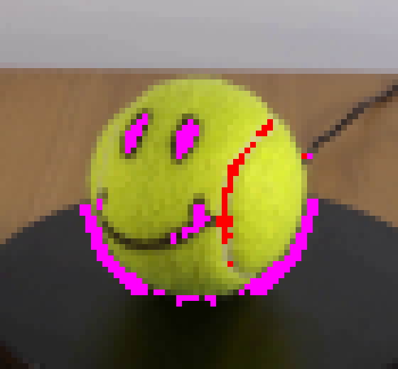
视觉工具实际返回图片 4
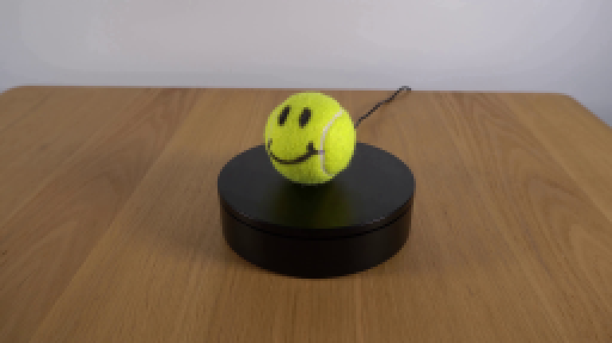
视觉工具实际返回图片 5
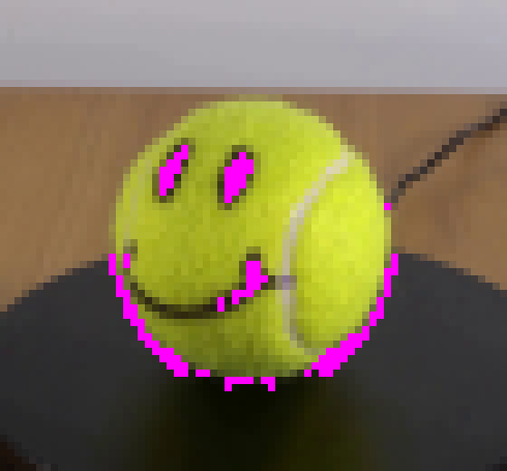
视觉工具实际返回图片 6
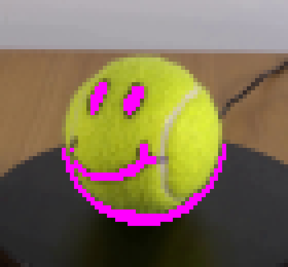
视觉工具实际返回图片 7
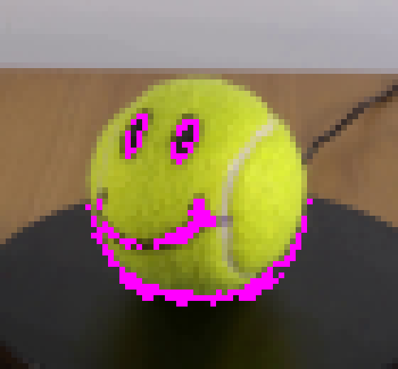
视觉工具实际返回图片 8
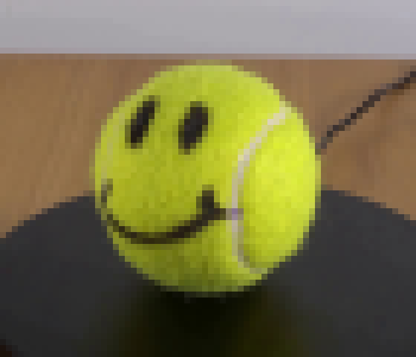
视觉工具实际返回图片 9
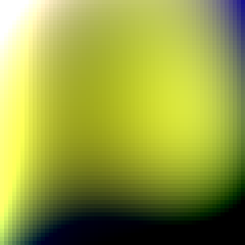
视觉工具实际返回图片 10
视觉工具实际返回图片 11
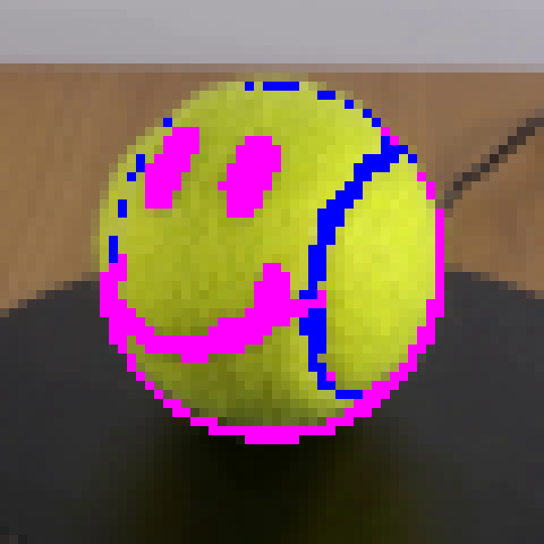
视觉工具实际返回图片 12
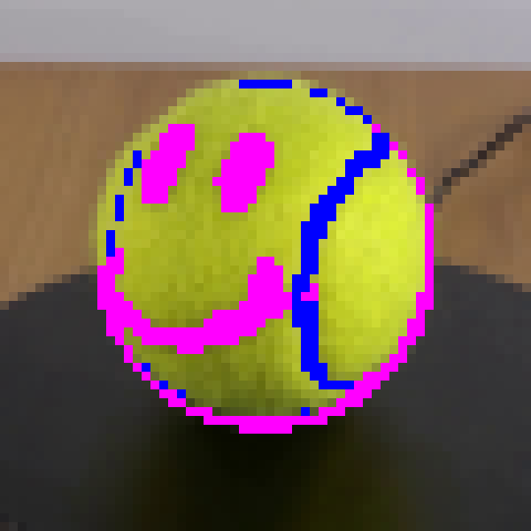
视觉工具实际返回图片 13
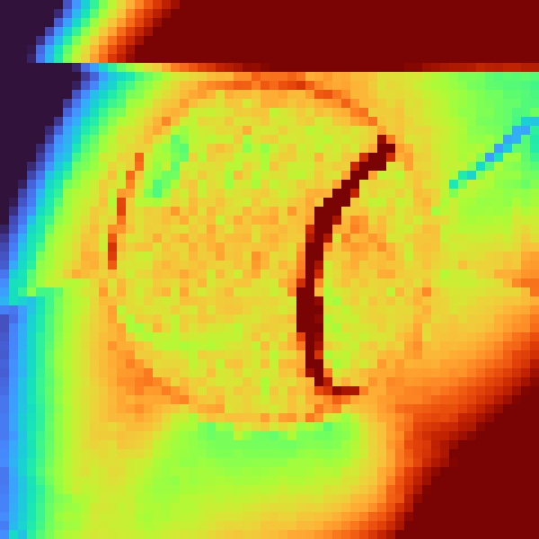
视觉工具实际返回图片 14
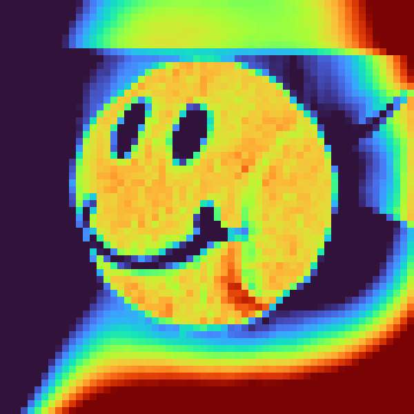
视觉工具实际返回图片 15
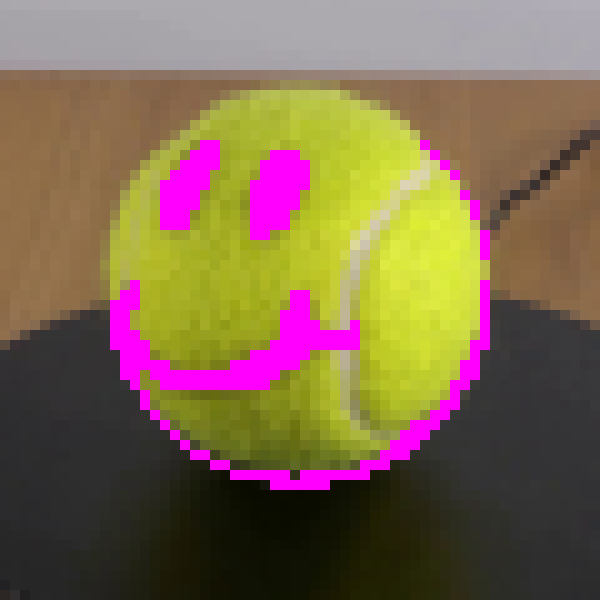
视觉工具实际返回图片 16
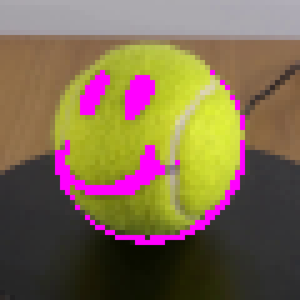
视觉工具实际返回图片 17

视觉工具实际返回图片 18
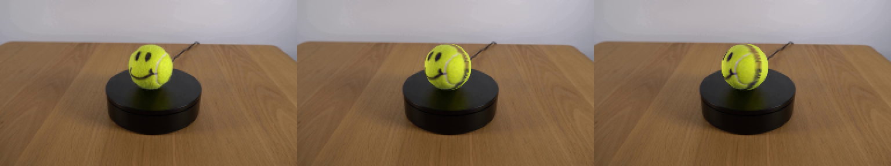
视觉工具实际返回图片 19
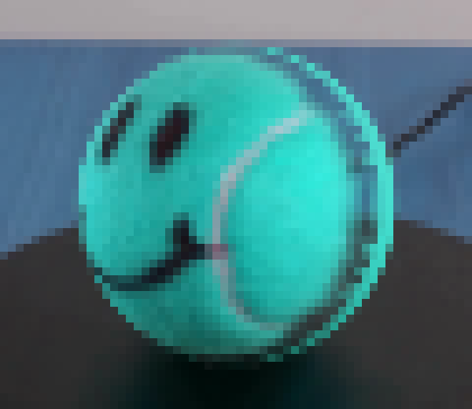
视觉工具实际返回图片 20
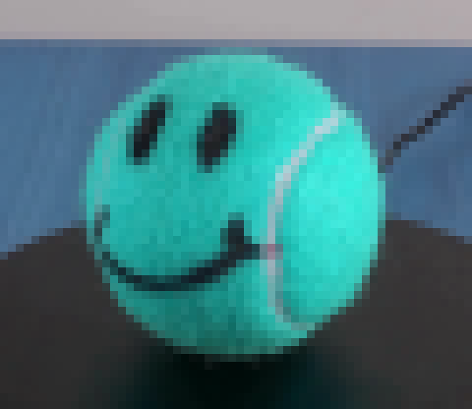
视觉工具实际返回图片 21
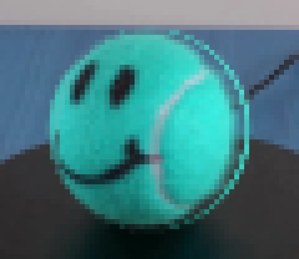
视觉工具实际返回图片 22
视觉工具实际返回图片 23
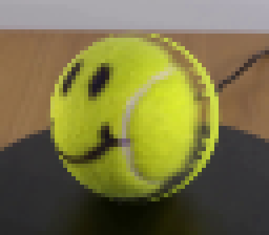
视觉工具实际返回图片 24
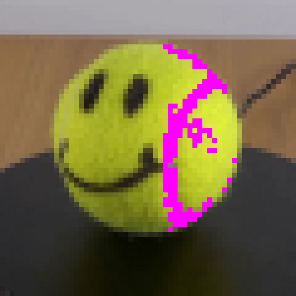
视觉工具实际返回图片 25
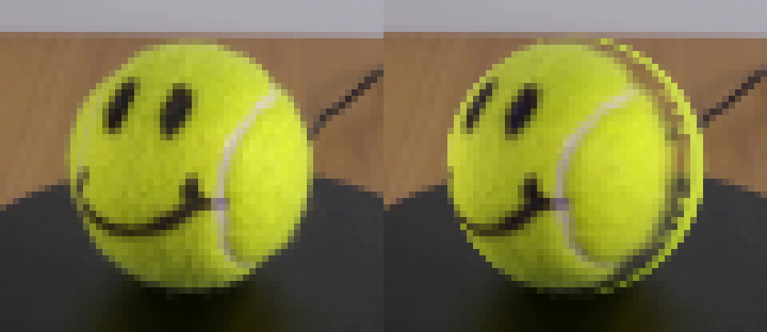
视觉工具实际返回图片 26
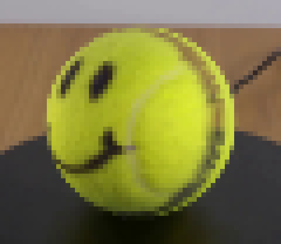
视觉工具实际返回图片 27
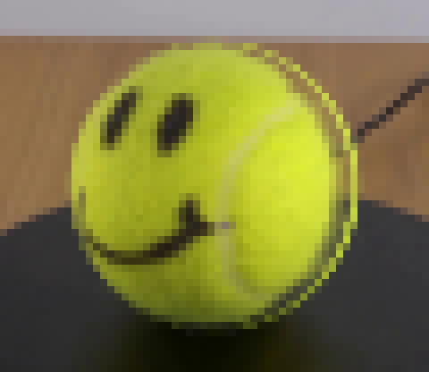
视觉工具实际返回图片 28
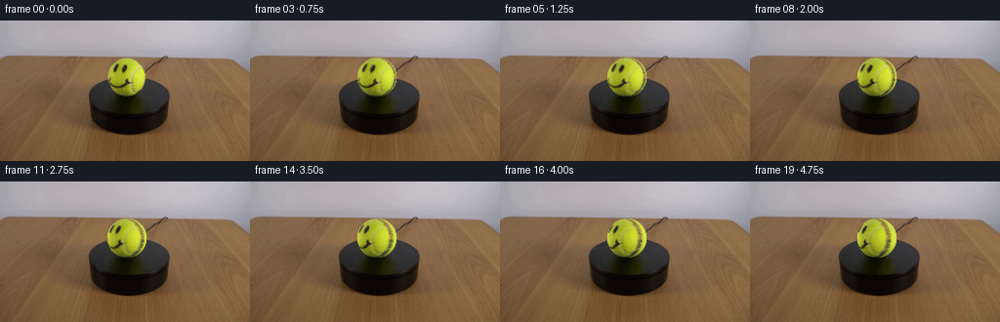
保存候选 2 份；完成命令 57 次；可验证图片返回 28 张。原始 API 响应与完整日志保留在本地。